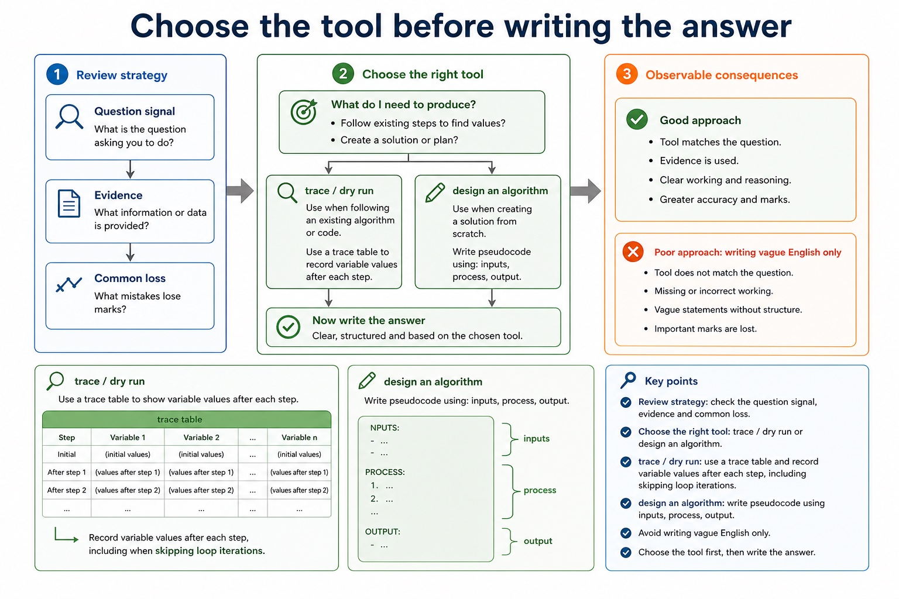
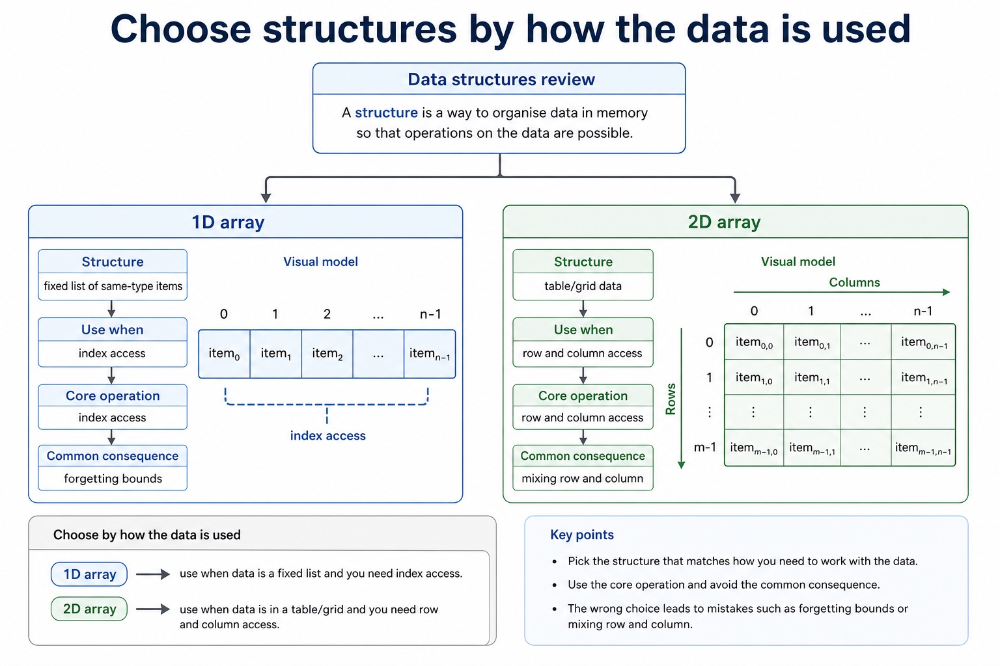
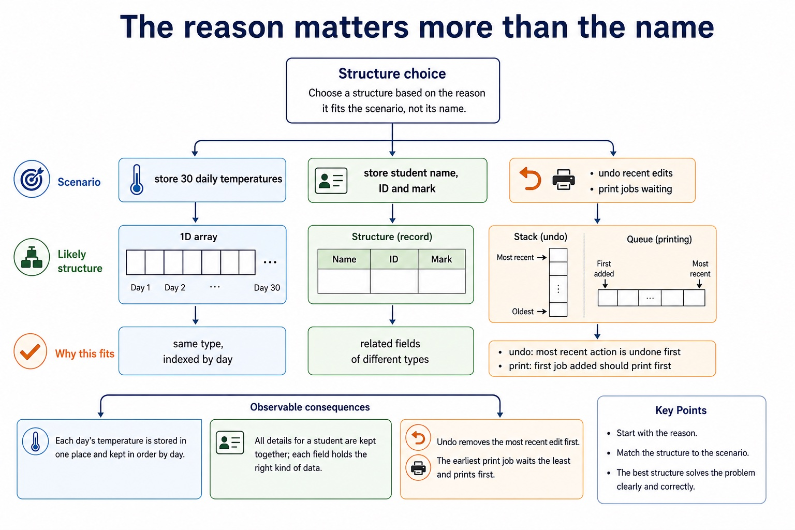
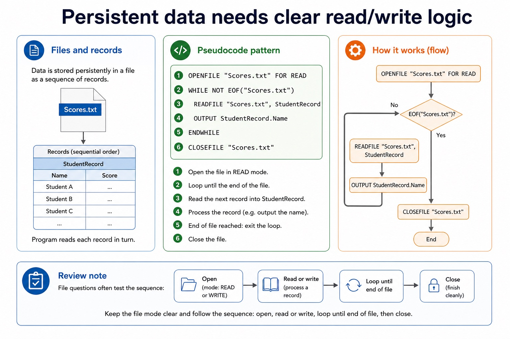
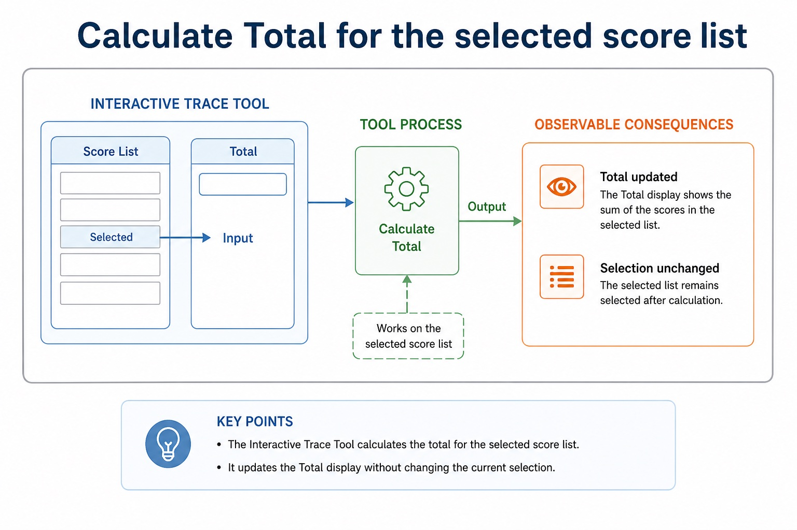
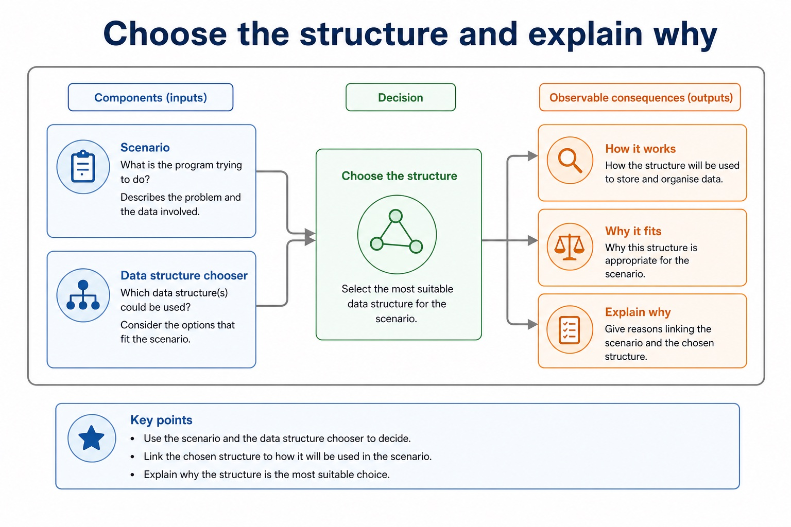

Paper 2 rewards method. Guessing is just a very confident way to donate marks.
This review connects algorithm design and data structures: dry running, pseudocode, arrays, records,
files, stacks, queues and choosing the right structure. Chinese support: dry run 手工运行,
trace table 跟踪表, data structure 数据结构, boundary test 边界测试。
Tracepseudocode accurately using a table
Selectappropriate data structures for scenarios
Writeexam answers with method, evidence and precise terms
Algorithmsequence, selection, iterationshow the steps
Tracevariables after each loopdo not skip rows
Structurearray, record, stack, queuefit the access pattern
Evidenceexpected outputanswer like a mark scheme
Why this matters
Algorithm questions often give partial marks for method. A neat trace table can rescue marks even when the final answer goes sideways.
Common trap
Do not answer data structure questions with syntax alone. Explain why the structure matches the required access pattern.
Warm-up hook
What is the first move?
Question stem: “Trace the algorithm and state the final value of Total.”
Pick the method that matches a trace question.
Review strategy
Choose the tool before writing the answer
Question signal
Tool
Evidence
Common loss
trace / dry run
trace table
variable values after each step
skipping loop iterations
design an algorithm
pseudocode
inputs, process, output
writing vague English only
choose a data structure
scenario matching
access pattern and operations
naming without reason
test an algorithm
test cases
normal, boundary, abnormal data
missing expected result
Choose the tool before writing the answer

Choose the tool before writing the answer: source-grounded visual explanation.
Lesson fact: Review strategy
Lesson fact: Question signal
Lesson fact: Evidence
Lesson fact: Common loss
Lesson fact: trace / dry run
Lesson fact: trace table
Lesson fact: variable values after each step
Lesson fact: skipping loop iterations
Lesson fact: design an algorithm
Lesson fact: pseudocode
Lesson fact: inputs, process, output
Lesson fact: writing vague English only
Dry run
Trace tables turn moving code into visible evidence
Cambridge-style pseudocode
SET Total TO 0
FOR Index TO 1 TO 4
IF Scores[Index] > 50 THEN
SET Total TO Total + Scores[Index]
ENDIF
NEXT Index
OUTPUT Total
Trace focus
For Scores = [40, 65, 50, 80], track Index, condition result and Total. Notice that greater than 50 does not include 50.
Exam habit: update the variable only when the assignment statement actually runs.
Algorithm design review
Good pseudocode is precise enough to trace
Inputs
State the data being read, such as target name, score list or file record.
Process
Use sequence, selection and iteration with clear variable updates.
Output
State exactly what is displayed, returned or stored.
Good pseudocode is precise enough to trace
Good pseudocode is precise enough to trace: source-grounded visual explanation.
Lesson fact: Algorithm design review
Lesson fact: State the data being read, such as target name, score list or file record.
Lesson fact: Use sequence, selection and iteration with clear variable updates.
Lesson fact: State exactly what is displayed, returned or stored.
Data structures review
Choose structures by how the data is used
Structure
Use when
Core operation
Trap
1D array
fixed list of same-type items
index access
forgetting bounds
2D array
table/grid data
row and column access
mixing row and column
Record
one item has different fields
field access
using many separate arrays unnecessarily
Stack
last-in, first-out
push and pop
confusing with queue
Queue
first-in, first-out
enqueue and dequeue
removing newest item
Choose structures by how the data is used

Choose structures by how the data is used: source-grounded visual explanation.
Lesson fact: Data structures review
Lesson fact: Structure
Lesson fact: Use when
Lesson fact: Core operation
Lesson fact: 1D array
Lesson fact: fixed list of same-type items
Lesson fact: index access
Lesson fact: forgetting bounds
Lesson fact: 2D array
Lesson fact: table/grid data
Lesson fact: row and column access
Lesson fact: mixing row and column
Structure choice
The reason matters more than the name
Scenario
Likely structure
Reason
store 30 daily temperatures
1D array
same type, indexed by day
store student name, ID and mark
record
related fields of different types
undo recent edits
stack
most recent action is undone first
print jobs waiting
queue
first job added should print first
The reason matters more than the name

The reason matters more than the name: source-grounded visual explanation.
Lesson fact: Structure choice
Lesson fact: Scenario
Lesson fact: Likely structure
Lesson fact: store 30 daily temperatures
Lesson fact: 1D array
Lesson fact: same type, indexed by day
Lesson fact: store student name, ID and mark
Lesson fact: related fields of different types
Lesson fact: undo recent edits
Lesson fact: most recent action is undone first
Lesson fact: print jobs waiting
Lesson fact: first job added should print first
Files and records
Persistent data needs clear read/write logic
Pseudocode pattern
OPENFILE "Scores.txt" FOR READ
WHILE NOT EOF("Scores.txt")
READFILE "Scores.txt", StudentRecord
OUTPUT StudentRecord.Name
ENDWHILE
CLOSEFILE "Scores.txt"
Review note
File questions often test the sequence: open, read or write, loop until end of file, then close. Keep the file mode clear.
Persistent data needs clear read/write logic

Persistent data needs clear read/write logic: source-grounded visual explanation.
Lesson fact: Files and records
Lesson fact: Pseudocode pattern
Lesson fact: OPENFILE "Scores.txt" FOR READ
Lesson fact: WHILE NOT EOF("Scores.txt")
Lesson fact: READFILE "Scores.txt", StudentRecord
Lesson fact: OUTPUT StudentRecord.Name
Lesson fact: ENDWHILE
Lesson fact: CLOSEFILE "Scores.txt"
Lesson fact: Review note
Lesson fact: File questions often test the sequence: open, read or write, loop until end of file, then close. Keep the file mode clear.
Interactive trace tool
Calculate Total for the selected score list
Calculate Total for the selected score list

Calculate Total for the selected score list: source-grounded visual explanation.
Lesson fact: Interactive trace tool
Data structure chooser
Choose the structure and explain why
Choose the structure and explain why

Choose the structure and explain why: source-grounded visual explanation.
Lesson fact: Data structure chooser
Lesson fact: Scenario
Worked examples
Mark-worthy response patterns
Practice with instant checking
Short retrieval before exam-style questions
Mistake debugging
Fix the Paper 2 answer
Exam-style questions
Mixed algorithm and data structure questions with expandable MS
These are original AS-style questions. The mark schemes use Cambridge-style precision, not copied past-paper wording.
Summary
Three marks-saving habits
Trace visiblywrite intermediate variable values
Justify choiceslink structures to operations
Use Cambridge stylepseudocode for exam answers, Java only as support
Homework
Complete a Paper 2 algorithm review sheet
Trace two loops and include a complete trace table for each.
Write one algorithm using selection and iteration to find the largest value in an array.
Choose data structures for four scenarios and justify each choice.
Write one 6-mark answer explaining normal, boundary and abnormal test data for your algorithm.
Marking focus: complete method, precise structure choice, and expected results for any test data.